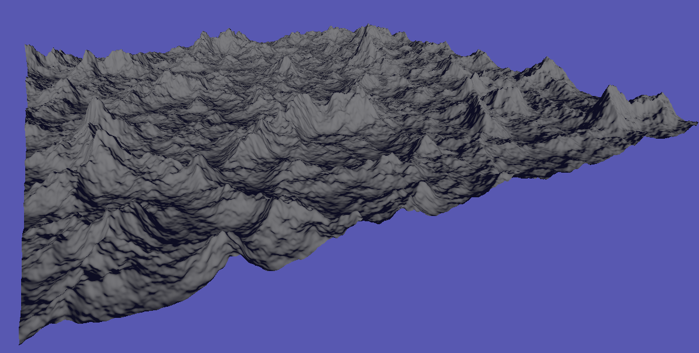

To participate you will need to do the following instructions on a computer.
Any questions can be directed to my email at cameron.dawes9@gmail.com and I will respond ASAP.
Please read the information sheet and then continue on.
Download the program files off of the Github or as a zip file from OneDrive.
After downloading it run the program and use the tool to complete the tasks below.
Task 1, use noise height and redistribution to recreate the terrain in the following image.
Task 2, create a large terrain with the diamond square algorithm, use hydraulic erosion to make it more realistic and then use the flatten brush to create a flat platform on the side of a clifface.
For features it currently has:\nTerrain Generation with the Diamond Square algorithm\nTerrain Generation with noise with control such as noise octaves\nHydraulic Erosion with controls to change the raindrop simulation\nExport as an OBJ file\nFlatten brush to adjust terrain\nWireframe view
After using the tool fill out the questionnaire.
All done! Thank you for participating. If you would like to share this with colleagues and friends that would help a lot.
After some time I will send out the questionnaire again to get feedback on added features and improvements.